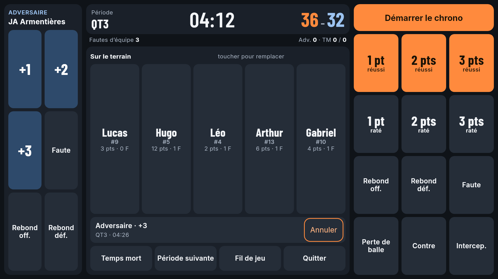
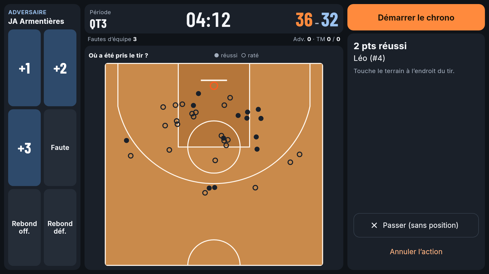
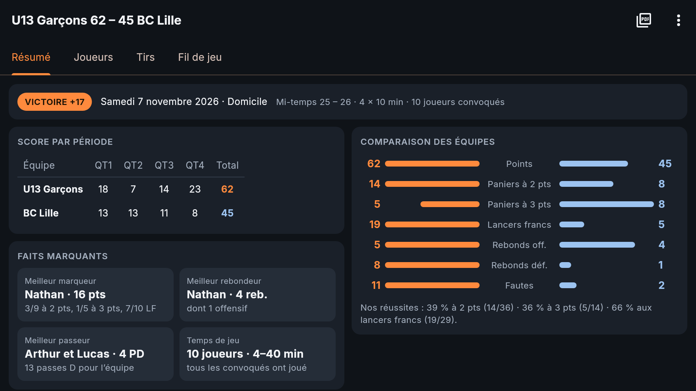
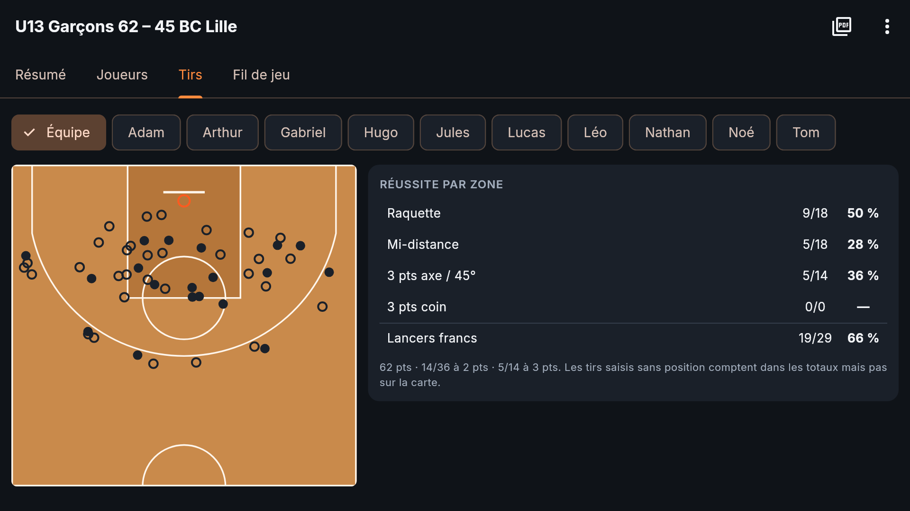

Baskapp
Les stats de votre équipe de basket jeunes, en direct, depuis le bord du terrain.
Pourquoi Baskapp ?
Baskapp est née au bord des terrains, le samedi, pendant les matchs des jeunes. Les applis de statistiques existantes demandent de tout noter pour les deux équipes, joueur par joueur : au bout de deux minutes on est largué, et on regarde son téléphone au lieu du match.
J'ai voulu l'inverse : un outil simple pour suivre son équipe, avec des stats justes à partager avec les familles et le coach à la fin du match.
Baskapp est un projet personnel, développé sur mon temps libre. Elle est et restera gratuite, sans publicité et sans collecte de données : tout reste sur votre téléphone.
Ce qu'elle fait
Concentré sur votre équipe
Chaque action est attribuée au bon joueur, avec l'endroit du tir et la passe décisive.
L'adversaire en une touche
+1, +2, +3, faute, rebond : sans nom ni numéro. Le score reste juste, sans effort.
Un rapport à partager
Score par période, stats individuelles, carte des tirs, en PDF complet ou version « parents ».
En images




Me dire merci
Baskapp vous rend service au bord du terrain ? Si vous le souhaitez, vous pouvez m'offrir un café (ou un ballon !). C'est entièrement facultatif : l'appli reste gratuite et complète pour tout le monde.
Merci via PayPalUn grand merci aussi à celles et ceux qui partagent l'appli autour d'eux !